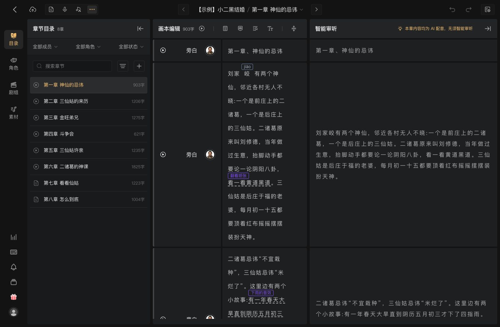
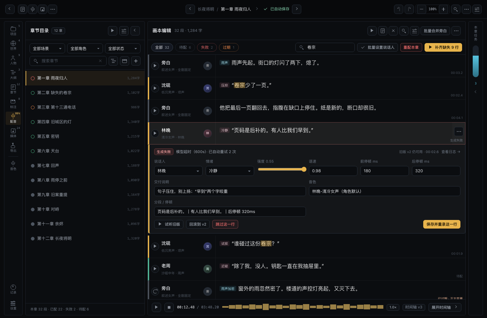

这是一个“员工每天在里面干活”的制作工具：写设定、跑生成、校对台词、配、混、导出。 设计的首要目标不是好看，而是让使用者随时知道当前该做什么、下一步点哪里、哪些操作会覆盖已有产物。 整体气质参考万象有声 studio：近黑底、1px 细边框、克制的琥珀金强调、信息密度高但不拥挤。
走查对象：https://www.audimind.com/studio/52181776（示例项目「小二黑结婚 / 第一章 神仙的忌讳」）。
方式：浏览器实际进入 studio，逐屏点击 + 用户提供的 5 张截图对照。以下按屏记录，并标注对本项目的取舍。
| 屏 / 截图 | 观察到的结构与功能 | 本项目取舍 |
|---|---|---|
| A · 工作室外壳 截图 5、走查记录 |
最左 56px 图标栏（48×40 项）：目录 / 角色 / 剧组 / 素材，底部声波、文档、通知、文件夹、头像； 第二列 360px 上下文面板「章节目录」（状态圆环 + 章名 + 字数、三组筛选、搜索、排序、新建）； 主区标题「画本编辑 903字」，右侧一排图标工具（整章播放、麦克风、视图、TTS、字号、设置）； 顶栏左组＝返回 + 视图切换，中段＝作品 / 章节面包屑 + 上下章，右组＝撤销、重做、更多； 右侧常驻 550px「智能审听」面板，可收起。 |
采用：56px 图标栏 + 360px 上下文面板 + 主编辑区 + 可收起的右栏；章节面板带字数、主区标题带段数、图标工具条、面包屑、上下章居中。 调整：9 个制作阶段全部收进图标栏，用 9.5px 文案与右上角计数区分；上下文面板随当前阶段切换内容。 |
| B · 画本编辑 截图 4、5 |
每行 = 200px 说话人列 + 正文列，行内叠加情绪/方式小标签（[ao]、[调侃]）； 角色按颜色整行着色（4px 左色条）；选中行为浅灰底 #1e1f20，不是整行高饱和填充； 行高 68px，正文 16px / 24px，行间 1px 分隔线，平铺无圆角；行内操作 hover 才出现。 |
采用：说话人整行配色 + 浅灰选中底 + 行内标签 + 行级播放，用于配音与标注页。 不采用：全篇衬线正文，校对时等宽数字更易对齐，正文仅在章节阅读态用衬线。 |
| C · 角色视图 截图 1、2、3 |
标题「剧情角色 21 个」；三个下拉筛选（全部章节 / 全部特征 / 全部配音演员）+ 搜索 + 新建； 每行：头像 + 角色名 + 已分配配音演员 + 该角色字数；未分配显示「未选择配音」； 点文中角色标签可直接换配音/新建角色；批量合并旁白、智能标记参考都是带参数面板的弹窗； 未发现自动推荐音色。 |
采用：角色行显示“绑定音色 + 字数”、按章节/特征/音色筛选、点击说话人即改。 差异：本项目有音色编排打分与候选生成，比参考更进一步，保留并强化“建议 → 一键采用”。 |
| D · 项目设置弹窗 截图 1、2、3 |
弹窗内左侧二级导航：基础设定（项目信息 / 制作要求 / 片头片尾 / 原稿管理）、团队协作（创作模式 / 成员与权限 / 任务管理）； 表单为“标签 + 控件 + 字数计数”，底部右下角琥珀金「保存」；开关为金色。 |
采用：左侧二级导航 + 每块独立保存 + 金底主按钮，用于设置页。 不采用：成员与权限、创作模式（本机单用户产品无此概念）。 |
| E · 角色 / 剧组 / 通知 走查记录 |
剧组：成员列表，标注导演/配音等职责；通知中心 Alt+T；未发现评论、版本历史、导出入口（导出应在后期视图）。 |
不采用：评论/@、版本对比、成员权限。 保留：本项目已有更强的运行记录与导出编排，作为差异化，不向参考看齐。 |
| 维度 | 参考实测 | 本项目定稿 |
|---|---|---|
| 背景 / 卡片 | 近黑 #0f1011；面板 #17181a；1px #26272a 边框 | #08090b / #0b0d10 / #0f1216，边框 #1d222b，层级更细 |
| 强调色 | 琥珀金，主按钮金底深字 | #e8b44c，主按钮 --accent-ink 深字 |
| 语义色 | 参考未成体系 | 运行青 / 完成绿 / 警示橙 / 危险红，与主色分离 |
| 字号 | 11–12px 为主，标题 14px | 12.5px 为主，页面标题 22px，微标签 10px |
| 圆角 / 间距 | 6–8px，行高紧凑 | 5/7/11/15 四档，4px 基准栅格 |
| 图标 | 线性图标 | 纯 CSS 绘制线性图标，无字体、无 CDN |
每页只有一个主行动（金底按钮），其余动作降为描边或图标；危险动作永远不与主行动并排。
未开始/运行中/已就绪/已过期/失败，用固定语义色 + 文案 + 圆点表达，不靠动画吸引注意。
自动编排、补全、生成都提供撤回或保留旧版本；覆盖与删除必须二次确认并列出影响范围。
12.5px 正文、10px 微标签、等宽数字；列宽固定，状态列靠右，扫描路径自上而下。
语义色的固定搭配：青=正在跑，绿=可继续，橙=要你处理但可恢复，红=已失败或不可逆。不要用金色表示警告。
数字统一 font-variant-numeric: tabular-nums；ID、时长、MIDI 用等宽字体；中文正文行高不低于 1.6。
基准 4px；常用 8/12/16/20/24。卡片内边距 14–16，页面左右 24，栏间距 18。
圆角：输入与小按钮 6–7，卡片 11，弹窗 15，胶囊 999。只有“可点击”的容器在 hover 时上浮 1px，不做大位移。
主按钮每屏最多 1 个；危险动作必须是描边红，只有“已确认的不可逆提交”才用实心红；停止类动作用描边红 + 停止图标。
22 / 32 行 · 剩余约 4:12
播放头唯一，且只出现在时间轴；波形只做“有没有声、断在哪”的判断，不承担精修。
v2 骨架按 studio 实测重排：56px 图标栏 → 360px 上下文面板 → 主编辑区 → 44px 可收起任务栏。 图标栏放 9 个制作阶段（图标 + 计数 + 9.5px 文案），底部放运行记录与设置；上下文面板随当前阶段切换（章节目录 / 角色列表 / 素材列表）。
项目 → 世界 → 人物 → 大纲 → 章节 → 标注 → 配音 → 媒体 → 导出；底部：音色、运行记录、设置。
项 48×40，图标 18px + 文案，间距 4px；选中项为琥珀金图标 + 9% 金底；右上角小字为计数（工程数、章数、配音完成度）。
编辑态为章节目录：12 章、字数、空心状态圆环、全部场景/角色/状态三组同排筛选、搜索 + 排序 + 批量 + 新增。
不再使用“个人 / 团队”分组；会员、收费、协作、评论、权限入口全部去掉。
顶栏顺序（照参考实测）：左组＝返回 + 视图切换（画本 / 配音 / 后期 / 更多）｜ 中段＝上一章 → 面包屑（工程 / 章节）→ 保存状态 → 下一章 ｜ 右组＝撤销 / 重做 → 缩放 → 搜索 → 更多 → 设置。 编辑区头部：标题 + 段数 + 字数，右侧整章试听、查看原文、隐藏标签、查找替换、字号、批量合并旁白、更多。
| 界面 | 要回答的问题 | 主操作 | 下一步 |
|---|---|---|---|
| 01 项目列表 | 我现在有哪些工程，哪个卡住了？ | 打开工程 / 新建工程 | 进入世界或接着上次的位置 |
| 02 世界设定 | 这个世界的硬规则够不够写到结局？ | AI 生成世界条目（可覆盖需确认） | 人物 |
| 03 人物档案 | 谁出场、谁缺档案、谁没音色？ | 批量生成人物 / 补全缺失描述 | 音色库或大纲 |
| 04 音色库 | 每个角色的声音定了吗？ | 一键应用建议 / 批量生成音色 | 配音 |
| 05 大纲 | 幕、章、节拍的节奏对不对？ | 生成大纲 / 续写大纲 / 落地成章节 | 章节 |
| 06 章节 | 正文写完了吗，切分了吗？ | 生成正文 / 续写 / 切分场景与台词 | 标注 |
| 07 标注 | 镜头、情绪、音效、画面都标了吗？ | 生成预览 → 检查告警 → 生成并应用 | 配音 |
| 08 配音 | 哪些行没配、失败、过期？ | 补齐缺失 / 单行重录 | 媒体 |
| 09 媒体 | 音效、配图、视频还缺什么？ | 按条目生成，失败可单条重试 | 导出 |
| 10 导出 | 整条链跑到哪了，成片在哪？ | 开始编排 / 生成剪映草稿 | 回到项目列表或打开产物 |
| 11 设置 | 模型、音色、配乐、画幅配好了吗？ | 检测连接 / 保存本块 | 返回当前阶段 |
| 12 工程切换器 | 我要打开哪个工程？ | 打开最近工程 / 新建工程 | 进入项目页 |
| 13 弹窗集合 | 续写、生成、影响清单、删除、候选音色 | 确认或取消 | 回到发起页 |
| 场景 | 视觉 | 必须出现的信息 |
|---|---|---|
| 覆盖已有产物 | 橙色 banner + 勾选项 + 主按钮文案改为“覆盖并生成” | 会覆盖多少条、能否恢复 |
| 删除章节 / 整幕 | 红色描边确认 + 影响清单 + “assets 文件保留”说明 | 章数、字数、台词数、音频/图片/视频数 |
| 不可逆删除 | 实心红按钮置右，默认焦点在“取消” | “不可撤销”字样 |
| 生成中 | 青色进度条 + 当前第 k/N + 已用时 + 剩余估算；全屏蒙版内也可停止 | 正在做什么、还剩多少、如何中断 |
| 生成失败 | 红色行/卡片 + 原因 + “仅重试失败项” | 失败行号、中文原因、重试范围 |
| 已过期 | 橙色状态 + “重新生成”入口 | 为什么过期（正文/音色/参数变了） |
比对方法：参考 studio 与本项目 08-voice.html 都开到同一视口（1466×960）各自截图；
参考页的几何值由浏览器里读 getBoundingClientRect() 与 getComputedStyle() 得到，我们的值由同一套无头浏览器实测 + CSS 复核。
先记差异，再改代码，改完重截一次确认。


窄屏验证截图：ours-editor-1280.png（1280×800，无横向滚动、无控件重叠）。 参考页无法从页面上下文改视口，故两图统一取浏览器固定的 1466×960；由于它是固定宽度布局，1440×900 下各列数值不变。
| 项目 | 参考值 | 我们的值 | 是否调整 |
|---|---|---|---|
| 顶栏高度 / 内边距 | 56px / 16px | 56px / 16px（原 22px） | 已改：内边距收到 16px |
| 顶栏左组顺序 | 返回 → 视图切换（文档 / 麦克风 / 音频 / ⋯） | 返回 → 画本 / 配音 / 后期 / 更多 | 已改：视图切换移到左组，顺序一致 |
| 顶栏中段 | ‹ 作品 / 章节 ›，居中 | ‹ 面包屑 + 保存态 ›，绝对居中 | 已改：上下章与面包屑合并居中，保存态并入 |
| 顶栏右组 | 撤销 / 重做 / 更多 | 撤销 / 重做 / 缩放 / 搜索 / 更多 / 设置 | 增量：多出缩放、搜索、设置，位置不挤占左中段 |
| 图标栏宽度 | 56px（左 12px 起） | 56px（原 80px） | 已改：80 → 56 |
| 图标项尺寸 / 间距 | 48×40，间距 4px | 48×40，间距 4px（原 54 高、间距 6） | 已改 |
| 图标栏 → 面板间距 | 12px | 8px | 未改：统一面板间距 8px，起点差 4px |
| 上下文面板宽度 | 360px | 360px（原 320px） | 已改：320 → 360 |
| 面板间距 / 圆角 | 8px / 4px | 8px / 4px | 一致 |
| 章节行高 / 行结构 | 44px；状态圆环 + 章名 + 字数 | 44px；圆环 + 章名 + 字数（原为实心点且排在章名后） | 已改：换成空心圆环并前置 |
| 目录筛选布局 | 三组下拉同排，下接搜索 + 排序 + 新建 | 三组同排 + 搜索 / 排序 / 批量 / 新建 | 已改：两行改三行结构，批量并入工具行 |
| 台词行高 | 68px | 68px（原 64px） | 已改 |
| 说话人列宽 | 200px | 200px（原 176px） | 已改 |
| 正文排版 | 16px / 24px | 16px / 24px（原 30px） | 已改：与参考一致 |
| 行的容器形态 | 平铺行，1px 分隔线，无圆角、无间隙 | 平铺行 + 1px 分隔线（原为带 2px 间隙的圆角卡） | 已改：改为平铺，去掉卡片感 |
| 行底色 / 选中态 | 未选透明；选中 #1e1f20 | 未选透明；选中 #1e1f20 + 金色左条 | 已改：去掉整行金底，保留角色色条 |
| 行内操作 | 播放位于说话人列左缘，hover 才出现；行尾 ⋯ | 播放键在说话人列左缘（24px 圆形），行右仅留 ⋯ 与状态（原播放/更多都在右侧） | 已改：位置与显隐都对齐 |
| 编辑区起点 | 448px | 444px（12 + 56 + 8 + 360 + 8） | 差 4px，视觉一致 |
| 编辑区宽度 | 398px（右栏 550 展开） | 958px（右栏默认 44px 收起） | 对齐交互：默认收起；展开按参考 550px |
| 右侧面板 | 550px「智能审听」，可收起 | 44px 竖条 ⇄ 550px「本章任务」 | 已改：宽度对齐，内容换成生成任务 / 失败 / 一致性 |
| 编辑区筛选条 | 无（筛选在目录面板） | 44px：全部 / 待配 / 失败 / 过期 + 搜索 + 批量 + 补齐 | 增量：本项目的行级状态筛选更靠前 |
| 底部播控条 | 本屏无固定播放器 | 48px 波形 + 时间码 + 展开时间轴 | 增量：为逐行校对与波形定位保留 |
| 面板底色 / 强调色 | 面板 #131314，行 #1e1f20，品牌蓝 | 面板 #0b0d10，行 #1e1f20，琥珀金 | 不改：色板用我们自己的深色体系 |
顶栏 56/16、左中右三段分工、图标栏 56 与 48×40 项、上下文 360、章节行 44 与圆环结构、三组筛选、台词行 68、说话人列 200、平铺行与 1px 分隔、选中 #1e1f20、圆角 4、面板间距 8、正文 16/24、播放键在说话人列左缘、右栏展开 550、编辑区起点（差 4px）、行内标签、悬浮操作。
右栏内容为「本章任务」而非智能审听（宽度已按 550 对齐）；行右多一个「更多」按钮（参考只在行内给播放）；有行级筛选条与底部播控条（本项目增量）；面板底色 #0b0d10 与琥珀金强调色（色板选择）。均不改变四列骨架。
| 位置 | 控件与提示文案 | 参考功能 | 我们的处理 |
|---|---|---|---|
| 顶栏左 | ← 返回 | 返回上一级 | 复刻：回工程列表 |
| 顶栏中段 | 云图标「已自动保存」 | 自动保存状态 | 改造：勾 + 「已自动保存」文字，并入中段 |
| 顶栏右 | ↶ ↷ 撤销 / 重做 | 编辑历史回退 | 复刻：顶栏右组前两位 |
| 顶栏左 | 文档 / 麦克风 / 音频编辑 | 画本编辑、录音、后期视图切换 | 改造：画本 / 配音 / 后期三个视图按钮 |
| 顶栏左 | ⋯「审听与对轨视图」 | 菜单：智能对轨 / 内容审听 | 改造：更多菜单，后续接一致性校验与对轨 |
| 顶栏右 | 上一章 / 下一章 / 1 12 | 章节切换 | 复刻 |
| 顶栏中 | 项目名 / 章节名 + 下拉 | 章节选择器 | 复刻：面包屑 + 下拉箭头 |
| 顶栏右 | 缩放 − 100% + | 时间轴 / 正文字号缩放 | 复刻：顶栏缩放控件 |
| 顶栏右 | 搜索、⋯、设置 | 查找替换 / 更多 / 项目设定 | 复刻 |
| 图标栏 | 目录 / 角色 / 剧组 / 素材 + 底部工具 | 切换上下文面板 | 改造：9 阶段 + 音色 / 记录 / 设置；去掉剧组 |
| 目录头部 | 播放器、快捷键、搜索、字号、折叠 | 面板级工具 | 复刻：播放、面板设置、折叠；快捷键后续补 |
| 目录筛选 | 全部成员 | 按成员筛选章节 | 不复刻：单用户产品无成员 |
| 目录筛选 | 全部角色 / 全部状态 | 按角色、状态筛选 | 复刻，并增加“全部场景” |
| 目录筛选 | 搜索章节 + 清除 | 章节搜索 | 复刻 |
| 目录筛选 | 排序、新增、批量操作 | 章节排序 / 新建 / 批量 | 复刻（批量操作菜单后续接） |
| 目录行 | 章节名 + 字数 + 状态圆环 | 章节条目 | 复刻：空心圆环前置，用我们的语义色 |
| 编辑头部 | 画本编辑 + 903 字 | 当前视图与字数 | 复刻：画本编辑 + 32 段 · 1,284 字 |
| 编辑头部 | 整章合成播放 | 整章试听 | 复刻 |
| 编辑头部 | 查看原文 / 隐藏标签 | 纯文本模式 / 隐藏标注 | 复刻（静态稿中为图标按钮） |
| 编辑头部 | 查找替换 / 字号 | 替换台词、调整字号 | 复刻 |
| 编辑头部 | 批量合并旁白 | 按期望字数合并相邻旁白 | 复刻：保留按钮，另加“批量设置说话人” |
| 台词行 | 角色选择（旁白 / 二诸葛…） | 切换说话人 | 复刻：行内编辑里的说话人下拉 |
| 台词行 | 配音演员选择 | 切换该角色的配音 | 改造：显示“音色名”，点击去音色库 |
| 台词行 | 行右侧 ⋯ | 段落级更多操作 | 复刻：试听 + 更多两个按钮 |
| 台词行 | 展开 / 折叠箭头 | 展开段落详情 | 改造：选中即展开行内编辑面板 |
| 台词行 | 圆形头像 + 整行角色配色 | 快速识别说话人 | 复刻：4px 左色条 + 26px 头像 + 浅灰选中底 |
| 行内标签 | [ao] / [调侃] 等情绪与方式标签 | 行内标注 | 复刻：情绪 / 音效 / 雨声等 cue 小标签 |
| 右栏 | 智能审听（默认收起） | 展开审听 / 对轨 | 改造：本章任务栏，44px 竖条展开为 320px |
| 底栏 | 播放 / 停止 / 时间 / 展开时间轴 | 播放控制 | 复刻：48px 播控条 + 波形 + 展开入口 |
| 更多菜单 | 智能对轨 / 内容审听 | 对轨与审听模式 | 改造：后续换成“一致性校验 / 对轨”，不出现会员入口 |
复刻 = 已在 08-voice.html 落地；改造 = 保留功能但换成本项目语义；不复刻 = 会员、收费、协作、成员权限与本机单用户产品无关。
56px 图标栏（48×40 / 间距 4）、360px 章节面板（圆环 + 章名 + 字数）、三组同排筛选 + 搜索 / 排序 / 批量 / 新增、编辑头部 7 个图标、68px 平铺台词行、200px 说话人列、4px 角色色条、浅灰选中底、行内标签、悬浮行操作、行内编辑（失败重试与版本回滚）、右栏收起与展开、底部播控条、缩放、面包屑与上下章居中、保存状态、撤销 / 重做。
此前挂起的 5 项已在 13-dialogs.html 与 08-voice.html 补齐：批量合并旁白参数面板、查找替换浮层、更多菜单、时间轴展开态、视图切换（画本 / 配音 / 后期三个图标在顶栏左组）。
| 文件 | 界面 | 主要区块 | 1280×800 | 1440×900 |
|---|---|---|---|---|
| index.html | 设计总览 | 入口卡、13 屏列表、进度 | 无溢出 | 无溢出 |
| 01-projects.html | 项目列表 / 首页 | 工程卡、KPI、悬浮操作、空状态 | 无溢出 | 无溢出 |
| 02-world.html | 世界设定 | 硬规则、地点、势力、一致性提醒 | 无溢出 | 无溢出 |
| 03-characters.html | 人物档案 | 角色列表、档案表单、音色绑定、删除保护 | 无溢出 | 无溢出 |
| 04-voices.html | 音色库 | 音色池、角色编排表、候选对比、批量 | 无溢出 | 无溢出 |
| 05-outline.html | 大纲 | 三幕看板、节拍、节奏检查 | 无溢出 | 无溢出 |
| 06-chapter.html | 章节 | 正文编辑、拆场景 diff、覆盖确认 | 无溢出 | 无溢出 |
| 07-script.html | 标注 | 告警条、标注表、cue 标签、定位 | 无溢出 | 无溢出 |
| 08-voice.html | 配音 / 画本编辑 | 台词行、行内编辑、任务栏、播控条 | 无溢出 | 无溢出 |
| 09-media.html | 媒体 | 素材网格、生成中、失败重试 | 无溢出 | 无溢出 |
| 10-export.html | 导出 | 配置、完整性检查、历史任务 | 无溢出 | 无溢出 |
| 11-settings.html | 设置 | 适配器、模板映射、测试连接 | 无溢出 | 无溢出 |
| 12-switcher.html | 工程切换器 | 最近工程、路径打开、新建 | 无溢出 | 无溢出 |
| 13-dialogs.html | 弹窗集合 | 8 个弹窗与浮层（合并 / 替换 / 进度 / 删除等） | 无溢出 | 无溢出 |
自查方法：用无头 Chrome 在 1280×800 与 1440×900 下逐页加载，读取 document.documentElement.scrollWidth 与 window.innerWidth，14 个文件两档均相等（无横向滚动）；另对每屏截图人工核对无控件重叠。
所有页面为纯静态 HTML，共用 design/assets/app.css；无外部字体、图标库、CDN 或构建工具。
图标由 CSS 绘制，封面为 CSS 渐变抽象图，示例数据统一取自《长夜将明》。
设计稿不引用现有前端源码，也不修改 src/novel_drama/web/。